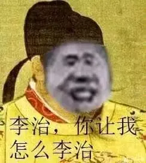
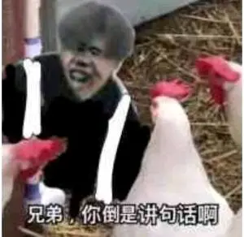
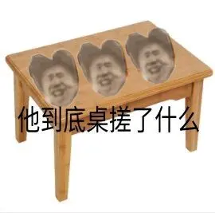

About the ikun
“Ikun is the art of life”
Sep2019-Jun2020
蔡徐坤这一生很难，也遇到过很多困难，他都克服了，有我们这群默默的守护着他，你们这群黑粉就别想黑他
Sep2020-Jun2021
他拿姜拿到手软，你打字打到手软，所以这就是区别。你有什么资格黑他?
评论区好下头，ikun们越是这个时候越要冷静！坤哥好不容易从那段暗无天日的时光熬出来.
Sep2021-Jun2022
你黑蔡徐坤，我们只解释不回黑，不是因为我们不敢，而是牠告诉我们，无论这个世界怎么样，我们永远要善良
但是我们给你好好说话，你不要以为我们好说话，爱鲲不惹事，也从来不怕事.
Tools
- Hand drawn
★★★★☆
- Ubee
★★★★★
- Sketch
★★★★☆
- perspective
★★★★☆
- color
★★★★☆
- structure
★★★★★


